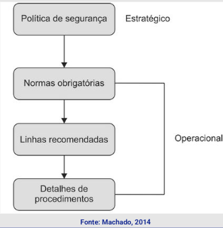

Disciplinas
Segurança da Informação. Concluído
Materiais
[UFMS Digital] Segurança da Informação - Módulo 1 - Unidade 2
Prof° ministrante: Dionisio Machado Leite Filho.
Princípios da segurança da informação.
- São três os princípios que orientam e sustentam a segurança da informação:
- Integridade;
- Confidencialidade;
- Disponibilidade.
Integridade de informação.
- Integridade - garantir que a informação não será alterada de forma não autorizada.
- Íntegra não significa exata.
- A informação pode ter integridade, mas não exatidão.
- Não podemos ter exatidão sem integridade.
- Quem recebe uma informação necessita ter a segurança de que a informação recebida é exatamente a mesma que foi colocada à sua disposição.
- Para garantirmos a integridade das informações temos de assegurar que apenas as pessoas ou sistemas autorizados possam fazer alterações;
- Integridade significa que nos dados originais nada foi acrescentado, retirado ou modificado;
- Os usuários geralmente afetam um sistema ou a integridade de seus dados por engano e não intencionalmente, embora usuários internos de uma empresa também possam realizar atos mal-intencionados.
Confidencialidade de informação.
- Nem todas as informações são sigilosas, ainda que sejam informações importantes, consideradas críticas.
- Entretanto:
- Dados pessoais (número de telefone, endereço, CPF e RG, senha de acesso a bancos ou outros sites comerciais);
- Dados de cartões de crédito (número do cartão, código de segurança, senha).
- Dados de fornecedores ou de clientes de uma empresa;
- Dados de políticas financeiras de uma organização, ou de uma pessoa, como seu saldo bancário; e
- Dados de marketing, ou política de preços de uma empresa, ou seus dados de rendimentos pessoais mensais, anuais.
- O princípio de manutenção da confidencialidade deve ser dirigido para o direito das pessoas e empresas e na classificação dos dados e informações.
Engenharia social.
- Engenharia social = enganar outra pessoa;
- Compartilhamento de informações confidenciais;
- Informações sigilosas;
- Compartilhamento de segredos comerciais;
- Confidencialidade é um dos fatores mais determinantes para a segurança;
- Diferentes graus de confidencialidade.
Grau de confidencialidade.
- Normalmente as informações possuem os seguintes tipos de classificação quanto à confidencialidade:
- Confidencial;
- Restrito;
- Sigiloso;
- Público;
- Educação e difusão da classificação da informação para as pessoas ligadas a um determinado sistema sobre a política de segurança e confidencialidade.
Disponibilidade de informação.
- Toda e qualquer informação deve estar disponível sempre que for necessário.
- Recursos tecnológicos da informação devem ser mantidos sempre em bom funcionamento e devem ser capazes de ser recuperados de forma rápida.
- A disponibilidade da informação se refere a toda estrutura física e tecnológica necessária para permitir o acesso, o tráfego e o armazenamento das informações e dados.
Vulnerabilidades.
- Nos sistemas sempre há pontos vulneráveis em relação à confidencialidade, à disponibilidade e à integridade das informações;
- Vulnerabilidade pode ser um software, hardware ou falha de um processo que pode fornecer a um atacante uma porta aberta que ele está à procura, para entrar em um computador ou rede e ter acesso não autorizado aos recursos dentro desse ambiente.
Políticas de segurança.
- Na política de segurança de uma empresa, a gestão estabelece como um programa de segurança será criado e as metas desse programa, atribui as responsabilidades, mostra o valor estratégico e tático da segurança e descreve como a aplicação dessa política deve ser realizada.
- Uma política específica de sistemas deve apresentar as decisões da administração que estão mais próximas dos computadores atuais, redes, aplicativos e dados.
- Uma política compõe-se de quatro grandes conjuntos de elementos, quais sejam:
- Normas - especificam como produtos de hardware e software devem ser utilizados.
- Linhas básicas (baselines) - prover o nível mínimo de segurança necessário para toda a empresa.
- Diretrizes - ações de recomendação e guias operacionais.
- Procedimentos - ações detalhadas, passo a passo, para a realização de uma determinada tarefa.

Segurança de computadores.
- Proteção oferecida para um sistema de informação automatizado a fim de alcançar os objetivos de preservar a integridade, confiabilidade e a disponibilidade dos recursos dos sistemas de informação.
- Inclui:
- software,
- hardware,
- firmware,
- informações/dados
- telecomunicações.